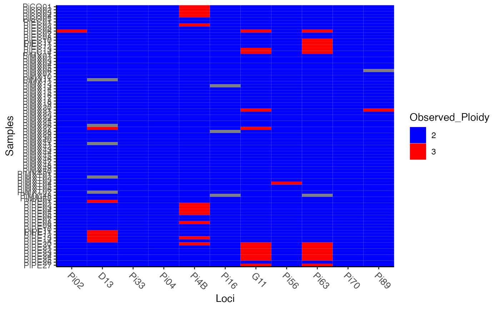

Split samples from a genind object into pseudo-haplotypes
Source:R/methods.r
make_haplotypes-method.RdSplit samples from a genind object into pseudo-haplotypes
Arguments
- gid
a genind or genlight object.
Details
Certain analyses, such as amova work best if within-sample variance (error) can be estimated. Practically, this is performed by splitting the genotypes across all loci to create multiple haplotypes. This way, the within-sample distance can be calculated and incorporated into the model. Please note that the haplotypes generated are based on the order of the unphased alleles in the genind object and do not represent true haplotypes.
Haploid data will be returned un-touched.
Examples
# Diploid data is doubled -------------------------------------------------
data(nancycats)
nan9 <- nancycats[pop = 9]
nan9hap <- make_haplotypes(nan9)
#> Warning: No strata found... creating one from the population.
nan9 # 9 individuals from population 9
#> /// GENIND OBJECT /////////
#>
#> // 9 individuals; 9 loci; 108 alleles; size: 28.6 Kb
#>
#> // Basic content
#> @tab: 9 x 108 matrix of allele counts
#> @loc.n.all: number of alleles per locus (range: 8-18)
#> @loc.fac: locus factor for the 108 columns of @tab
#> @all.names: list of allele names for each locus
#> @ploidy: ploidy of each individual (range: 2-2)
#> @type: codom
#> @call: .local(x = x, i = i, j = j, pop = 9, drop = drop)
#>
#> // Optional content
#> @pop: population of each individual (group size range: 9-9)
#> @other: a list containing: xy
#>
nan9hap # 18 haplotypes
#> /// GENIND OBJECT /////////
#>
#> // 18 individuals; 9 loci; 43 alleles; size: 21.3 Kb
#>
#> // Basic content
#> @tab: 18 x 43 matrix of allele counts
#> @loc.n.all: number of alleles per locus (range: 3-8)
#> @loc.fac: locus factor for the 43 columns of @tab
#> @all.names: list of allele names for each locus
#> @ploidy: ploidy of each individual (range: 1-1)
#> @type: codom
#> @call: df2genind(X = newdf, ploidy = 1, strata = df)
#>
#> // Optional content
#> @pop: population of each individual (group size range: 2-2)
#> @strata: a data frame with 2 columns ( pop, Individual )
strata(nan9hap) # strata gains a new column: Individual
#> pop Individual
#> 01 P09 N104
#> 02 P09 N104
#> 03 P09 N105
#> 04 P09 N105
#> 05 P09 N106
#> 06 P09 N106
#> 07 P09 N107
#> 08 P09 N107
#> 09 P09 N108
#> 10 P09 N108
#> 11 P09 N109
#> 12 P09 N109
#> 13 P09 N111
#> 14 P09 N111
#> 15 P09 N112
#> 16 P09 N112
#> 17 P09 N113
#> 18 P09 N113
indNames(nan9hap) # individuals are renamed sequentially
#> [1] "01" "02" "03" "04" "05" "06" "07" "08" "09" "10" "11" "12" "13" "14" "15"
#> [16] "16" "17" "18"
# Mix ploidy data can be split, but should be treated with caution --------
#
# For example, the Pinf data set contains 86 tetraploid individuals,
# but there appear to only be diploids and triploid genotypes. When
# we convert to haplotypes, those with all missing data are dropped.
data(Pinf)
Pinf
#>
#> This is a genclone object
#> -------------------------
#> Genotype information:
#>
#> 72 multilocus genotypes
#> 86 tetraploid individuals
#> 11 codominant loci
#>
#> Population information:
#>
#> 2 strata - Continent, Country
#> 2 populations defined - South America, North America
pmiss <- info_table(Pinf, type = "ploidy", plot = TRUE)

# No samples appear to be triploid across all loci. This will cause
# several haplotypes to have a lot of missing data.
p_haps <- make_haplotypes(Pinf)
p_haps
#> /// GENIND OBJECT /////////
#>
#> // 203 individuals; 11 loci; 95 alleles; size: 137.9 Kb
#>
#> // Basic content
#> @tab: 203 x 95 matrix of allele counts
#> @loc.n.all: number of alleles per locus (range: 2-25)
#> @loc.fac: locus factor for the 95 columns of @tab
#> @all.names: list of allele names for each locus
#> @ploidy: ploidy of each individual (range: 1-1)
#> @type: codom
#> @call: df2genind(X = newdf, ploidy = 1, strata = df)
#>
#> // Optional content
#> @pop: population of each individual (group size range: 2-3)
#> @strata: a data frame with 3 columns ( Continent, Country, Individual )
head(genind2df(p_haps), n = 20)
#> pop Pi02 D13 Pi33 Pi04 Pi4B Pi16 G11 Pi56 Pi63 Pi70 Pi89
#> 2 PiCO01 <NA> <NA> <NA> <NA> 205 <NA> <NA> <NA> <NA> <NA> <NA>
#> 3 PiCO01 162 136 203 166 213 178 156 174 157 192 179
#> 4 PiCO01 162 136 203 170 217 178 156 176 157 192 181
#> 6 PiCO02 <NA> <NA> <NA> <NA> 205 <NA> <NA> <NA> <NA> <NA> <NA>
#> 7 PiCO02 162 132 203 166 213 178 156 174 157 192 179
#> 8 PiCO02 162 136 203 170 217 178 156 176 157 192 181
#> 10 PiCO03 <NA> <NA> <NA> <NA> 205 <NA> <NA> <NA> <NA> <NA> <NA>
#> 11 PiCO03 162 136 203 166 213 178 156 174 157 192 179
#> 12 PiCO03 162 136 203 170 217 178 156 176 157 192 181
#> 14 PiCO04 <NA> <NA> <NA> <NA> 205 <NA> <NA> <NA> <NA> <NA> <NA>
#> 15 PiCO04 162 136 203 166 213 178 156 174 157 192 179
#> 16 PiCO04 162 136 203 170 217 178 156 176 157 192 181
#> 19 PiCO05 160 108 203 166 213 174 156 176 157 192 181
#> 20 PiCO05 162 112 203 170 225 178 156 176 157 192 181
#> 23 PiEC01 162 134 203 166 213 178 156 174 157 192 179
#> 24 PiEC01 162 136 203 170 217 178 156 176 157 192 181
#> 26 PiEC02 <NA> <NA> <NA> <NA> 205 <NA> <NA> <NA> <NA> <NA> <NA>
#> 27 PiEC02 162 136 203 166 213 178 156 174 157 192 179
#> 28 PiEC02 162 144 203 170 217 178 156 176 157 192 181
#> 31 PiEC03 162 136 203 166 205 178 156 174 157 192 179